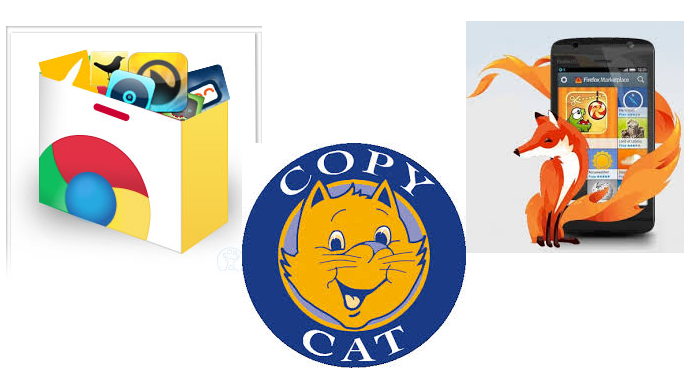
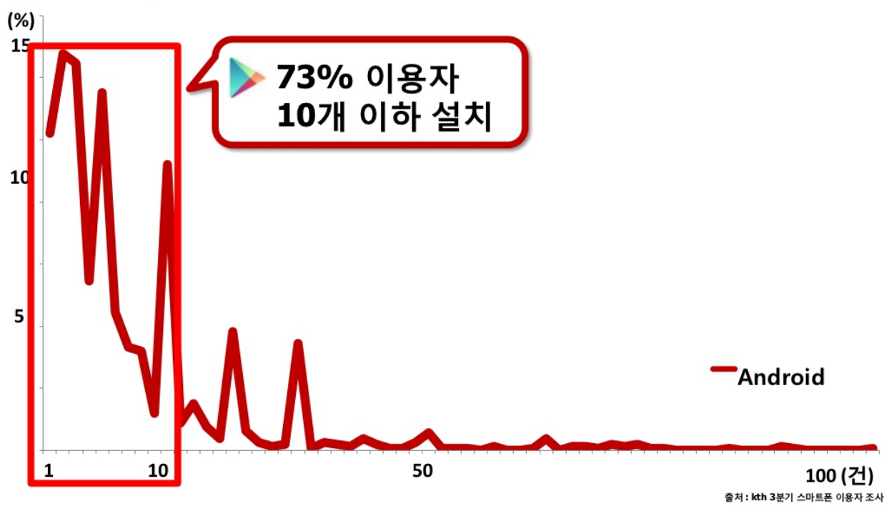

앱(App)이란 무엇인가?
다시 말해 앱(App)은 단순히 특정 OS에서 실행되는 Application의 준말이 아니라 '특정 유통플랫폼을 통해 접근하거나 다운로드할 수 있는 프로그램'으로 의미가 변하게 되었다.
네이티브앱(NativeApp), 하이브리드앱(HybridApp) 그리고 웹앱(WebApp)
원래 네이티브앱이라는 용어는 아이폰에서 없었다. 2007년 초반부터 일반 앱개발에 웹기술을 활용한 방법이 나오자, 순수한 네이티브 코드로 작성한 앱과 Webkit기반 웹기술을 일부 활용한 앱을 기술적으로 구분하기 위해 네이티브앱(NativeApp)과 하이브리드앱(HybridApp)으로 나눠 부르게 되었다. 특히 안드로이드기반 앱시장이 활성화되면서 개발자들이 플랫폼 종속성에 따른 개발비용을 줄이고자 이러한 하이브리드앱을 이용하게 되었고
Phonegap이라는
걸출한 프레임워크의 등장과 함께
하이브리드앱은 지금까지도 널리 채용되고 있는 개발방식이 되었다.
자연스럽게 사람들은 모바일에 최적화되어 보여지는 웹사이트인 '모바일웹'을 HTML5 기술의 대두와 함께 논의하기 시작했고 논의의 방향은
구글의 크롬OS(Chrome OS)의 대두와 함께 Web OS기반의 웹앱(Web App)으로 흘러가기 시작했다.
기술적인 구현 방식에서는 '모바일웹'이나 '일반 웹애플리케이션'이 '웹앱'과 큰 차이가 나는 것은 아니지만 유통플랫폼 여부에 따라 그것을 부르는 용어가 나뉘게 된다. 즉 웹앱은 애플의 AppStore와 유사한 어떤 특정 유통플랫폼을 통해 접근 및 사용이 가능한, 다양한 플랫폼에서 실행될 수 있는 웹 애플리케이션이라고 정의할 수가 있다.
웹앱의 생사는 유통플랫폼이 쥐고 있다
대체 앱에 있어 유통플랫폼은 무엇인가? 간단히 말해 앱의 생산자와 소비자를 연결시켜주는 시장이라고 볼 수 있다. 앱 이전의 세계에서 이것은 막연하나마 포탈서비스와 검색서비스가 담당했다. 하지만 이것은 매우 느슨한 시장이었다. 웹에는 소수의 값진 컨텐츠와 대다수의 쓰레기가 공존하는 세계였고 나쁜 의미에서든 좋은 의미에서든
내가 원하는 정보를 찾기 위한 웹서핑과 구글링이 필요한 세계였다. 그러나 애플이 앱스토어를 고안하면서 새로운 프리미엄 유통모델이 생겨났다. 앱스토어는 생산자와 소비자간에 편리한 결제방법을 제공하였고 단일 마케팅 창구를 마련해주었다.
흥미로운 점은 사람들이 무형의 컨텐츠를 구매하는 것에 저항감이 없어진 문화이다. 심지어는 너무나 단순한
방구뀌는 앱 하나가 엄청난 인기와 함께 개발자를 돈방석에 앉히는 일까지 벌어지면서 소비자는 사소한 컨텐츠에도 앱스토어에서는 선뜻 지갑을 여는 행위를 하게 되었고 개발자 입장에서는 더더욱 이 유통플랫폼에 기반한 앱을 개발하는 데 열정을 품게 되었다. 디지털 컨텐츠 유통의 새로운 문화가 만들어진 것이다.
웹앱의 개념은 바로 애플이 만들어낸 이 새로운 유통문화를 등에 업고 탄생했다. 웹기술과 함께 마켓플레이스를 제공하면 특정 OS플랫폼에는 종속되지 않으면서도 개발자에게는 더 빨리 개발할 수 있는 환경을 제공하면서 수익 또한 제공할 수 있는 터전이 생긴다. 웹앱이 기존의 웹과 미묘하게 다른 점은 결국 별도의 유통플랫폼이라는 시장이 있다는 것. 따라서 유통플랫폼의 매력도가 웹앱의 생사를 결정한다고 해도 과언이 아니다.
유통플랫폼으로서의 구글 크롬 마켓과 Firefox OS의 마켓플레이스
웹앱의 특성상 브라우저 혹은 브라우저 기반의 OS가 기술적인 관점에서 매우 중요한 요소일지라도 그것이 웹앱의 성공 여부를 결정짓는 절대적인 기준은 될 수 없다. 소비자는 이미 프리미엄 컨텐츠와 고급화된 UX의 유통방식에 익숙해져있고 이런 소비자의 눈높이를 맞춰주는 것은 브라우저의 기술적인 성숙도가 아니라 웹앱만이 제공할 수 있는 유통플랫폼에서의 진화된 무언가일 것이다.
이런 측면에서
구글 크롬의 웹스토어와
Firefox OS의 마켓플레이스는 기존의 앱스토어나 구글플레이와 거의 동일한 방식을 취하고 있다. 사용자는 마켓에서 검색을 하고 앱의 정보를 확인한 후 다운로드한다(웹앱의 경우 실제로 앱을 다운로드하는 것은 아니지만 사용자 경험 측면에서는 매우 유사한 행위를 보인다). 두 플랫폼 모두 특정 사용자 Identity 체계를 제공하고 Firefox OS의 경우에는
결제API를 제공하고 있다. 엄밀하게 말해 기존의 모바일OS기반의 유통플랫폼과 다른 점을 찾아볼 수 없다. 여기서 다음과 같은 질문을 던져볼 수 있다.
동일한 유통플랫폼 UX/서비스를 제공하는 상황에서 소비자는 어떤 시장을 선택할 것인가? 앱자체의 성능이 네이티브보다 더 뛰어나지도 않고 시장 접근성도 기존보다 편리하지 않다면 왜 소비자는 웹앱을 선택해야 하는가?

소비자에게 웹앱은 앱의 짝퉁일뿐인가?
이 질문은 웹앱 신봉자에게 있어서 상당히 뼈아픈 질문일 수 있다. 아직까지 확실한 답을 줄 수 없기 때문이다. 개발생산성과 플랫폼 독립성 등 생산자관점의 장점을 아무리 피력한들 그것만으로 이미 성공한 시장과 경쟁할 수는 없다.
그럼에도 불구하고 여전히 웹앱이 지금보다 더 나은 무언가라고 믿고있다면 이제까지의 웹앱의 행보에서 뭔가 간과되고 있는 점을 찾아야한다. 우리가 놓치고 있는 점은 왜 웹앱은 앱이 되려하는가이다. 즉, 앱과 같은 방식의 경쟁으로 웹앱은 앱을 이길 수가 없다는 점이다.
잊지 않았을 것이다. 15년전 웹이 Rich Client 애플리케이션 기반의 세상을 어떻게 바꾸었는지를. 그 당시 웹은 C++과 VB로 만들어진 Rich client들과 성능으로 경쟁하지 않았다. 사람들을 광활한 네트워크에 흠뻑 적시게 하고 뛰어난 확장성과 연계성 그리고 단순하고도 표준화된 UX가 사람들을 웹의 세상으로 이끌었다.
웹의 성공 요인들을 그대로 담아내면서 다운로드받아 실행하는 Rich Client만의 장점을 그대로 살려 프리미엄 유통마켓 위에 등장시킨 앱(App)을 웹앱은 어떤 가치를 더 담아서 새로운 시대를 열 수 있을까?
앱의 태생적 한계, 폐쇄성

위의 표는
KTH에서 2012년 3분기에 조사한 구글 플레이 사용자가 설치한 앱의 개수를 나타낸 표이다. 다수의 사용자는 10개 이하의 앱만을 사용하고 대부분의 스마트폰을 10여개의 앱이 제공하는 울타리 안에서 정보를 소비한다. 더구나 다수의 소비자는 초기에 스마트폰을 구매 후 한달이 지나면 마켓에 접속하는 횟수가 급격하게 줄어든다. 결국 유명한 앱 몇 개만이 다수의 사용자의 눈과 손을 독점하고 있다. 지금도 앱마켓에서는 이 소비자의 10개의 자주 쓰는 앱목록에 들어가기 위해 다른 70만개의 앱들과 치열한 경쟁을 벌이고 있다. 즉 앱의 세계에서 하나의 앱은 다른 모든 앱과 사용자 독점을 위한
완전 경쟁 관계에 있다.
하지만 웹은 다르다. 웹의 세계에서 하나의 서비스나 페이지는 전혀 다른 서비스나 페이지와 연결되면 연결될수록 그 가치를 인정받고 생명력을 얻게 된다. 웹에서 모든 페이지는 다른 모든 페이지와 기본적으로 공생관계에 있다(비록 국내 몇몇 포털의 경우는 예외이지만). 이러한 큰 차이는 웹이 앱에 비해 가질 수 있는 근본적인 장점일 것이다.
멀티 OS, 멀티 디바이스 그리고 ∞-Screen
앱은 데스크탑 모니터보다 작은 제한된 스크린에서 터치기반의 rich한 경험을 제공하는데 최적화된 형태로 개발된다. 때문에 앱 개발 방식은 단말 스크린이 파편화되면 될 수록 한계를 들어내게 된다. 애플은 이를 막기 위해 많은 노력을 하고 있고 안드로이드 계열에서는 이 파편화로 적지않은 부담을 개발자에게 안기고 있다. 하지만 문제는 지금 이후다. 제3의 OS를 꿈꾸는 Tizen과 Firefox OS, Ubuntu OS, Chrome OS 등의 새로운 OS의 등장으로 멀티 디바이스, 멀티 OS의 시대가 열리고 있고 구글 글래스나 애플 iWatch 그 외 수없이 많은 Wearable Device와 임베디드 기기등의 출현은 N-Screen의 시대를 넘어 ∞-Screen의 시대를 예고하고 있다. 즉 극단적 파편화의 시대를 막을 방법은 없다. 이를 위한 대안 중의 하나는 웹이고 그러한 시대적 흐름의 끝에 웹앱이 존재하고 있지 않을까?
모바일 OS의 혁신 정체와 팬덤현상의 해체
2013년 이상한 현상이 일어났다.
브랜드 가치에서 '갤럭시'가 '안드로이드'를 넘어선 것이다. 애플은 아이폰5 출시를 기점으로 주가가 급전직하한다. 모바일 OS의 혁신은 더 이상 없고 사람들은 점점 디바이스의 스펙에만 겨우 관심을 기울인다. 2013년 이전까지는 제조사가 모바일OS의 진화와 혁신을 따라가는 입장이었다면 2013년은 모바일OS가 제조사의 발전에 발목을 잡고 있는 것처럼 보인다. 이것은 삼성에게 있어 아주 단기간의 꿀맛과 같은 현상일 뿐이다. 머지않아 발전만 있고 혁신이 없는 모바일OS의 스마트폰의 스펙 경쟁은 가치를 상실할 때가 올 것이다. 이미 갤럭시3는 쿼드코어AP를 탑재했다. 이런 속도면 몇년만 지나면 우리는 20개의 코어가 집적된 AP를 맞이하게 될지도 모른다. 과연 우리가 20개의 코어가 필요한 시대에 살게될까? 그보다는 이 집적된 기술을 다양한 소형 디바이스에 이식하여 새로운 디바이스간 네트워크가 중요해지는 새로운 혁신을 맞이하게 되지 않을까?
앞서 언급한 대로 모바일OS에 특화된 것이 앱이라고 한다면 모바일OS의 혁신이 끝나고 약간의 시장변화만으로도 앱의 위치는 지금과는 다르게 매우 초라해질 것이고 Screen과 디바이스의 다양성이 있는 혁신의 중심에는 분명 웹앱이 자리잡고 있을 것이다.
앱의 최소단위와 최대단위는 앱, 규모의 경직성
많은 Provider들의 노력에도 불구하고 앱의 개발비용은 낮지 않다. 1인개발자가 앱개발로 밥벌이하는 건 이제 낭만적인 이야기일 뿐, 정확한 시장 예측 및 대응과 적절한 팀이 없이는 완전경쟁 앱스토어에서 살아남기 어려운 것이다. 이러다보니 컨텐츠의 내용보다는 컨텐츠를 담고 있는 앱의 완성도가 앱의 성공을 좌우하는 경우가 많다. 결국 앱이라고 하는 무형의 생산자는 개별 컨텐츠 소유자가 아닌 개발자이거나 여러 개발자와 자본을 모두 가진 기업이다.
앱을 아무리 최소한으로 개발해도 앱이고 앱을 아무리 무겁게 만들어도 앱이다. 즉 앱의 최소,최대 단위는 모두 앱으로 귀결된다. 이러한 규모의 경직성으로 인해 소소하지만 분명한 경쟁력을 가진 1인 컨텐츠 보유자들의 시장 참여가 매우 힘들었다.
그리고 더 나은 유통플랫폼
앞서 웹앱이 네이티브기반 앱을 뛰어넘을만한 몇가지 단초가 될만한 요소들을 살펴봤다. 하지만 가장 중요한 것은 소비자와 생산자를 연결시켜주는 유통플랫폼의 혁신이다.
유통플랫폼의 핵심은 결제와 인증 그리고 기반이 되는 OS플랫폼이다. 앞서 주장한 바와 같이 OS플랫폼 자체의 경쟁력은 애초에 웹이 네이티브에 역사적으로 한번도 이겨본 적이 없다. 웹앱이 애플과 구글의 유통플랫폼과 경쟁에서 이기려면 OS플랫폼이 아닌 결제와 인증 그리고 그 이상의 새로운 혁신 즉 판을 뒤엎을 무언가일 것이다. 그 혁신이 무엇일지는 정말 많은 고민과 통찰이 필요한 일이라고 생각한다.


최근 덧글